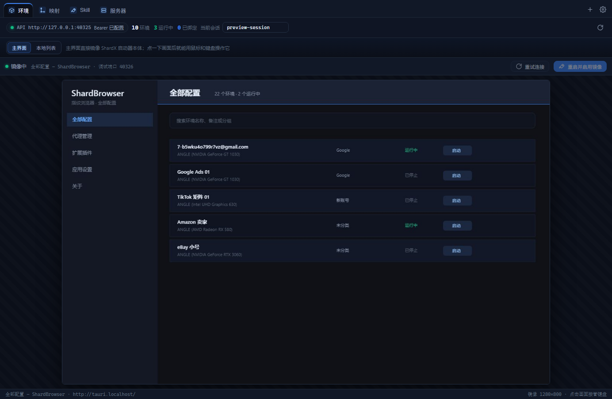
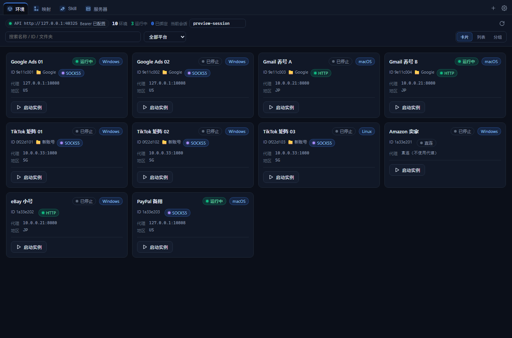
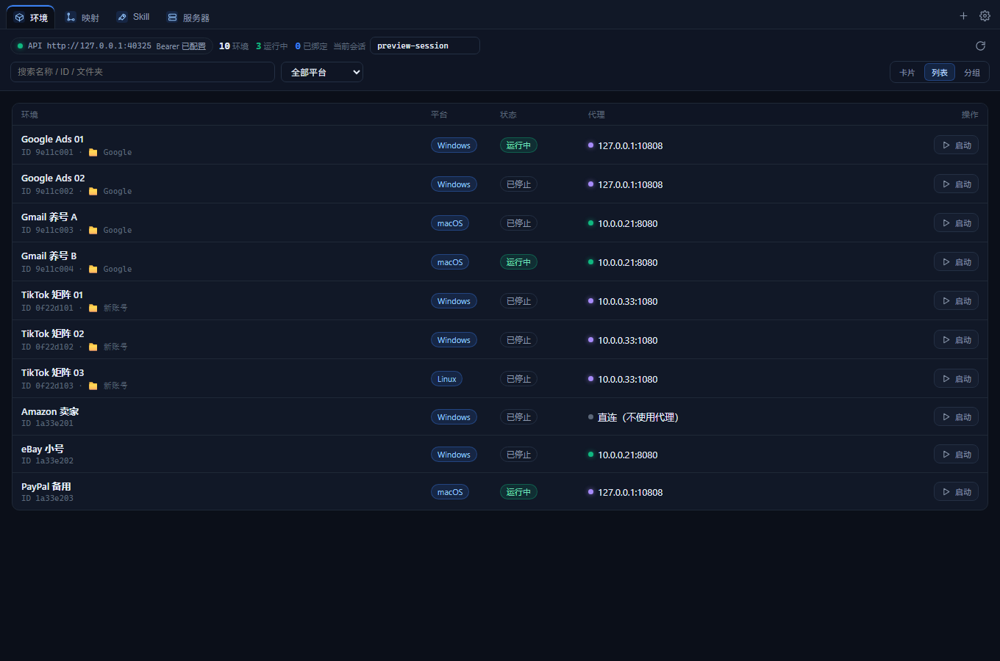
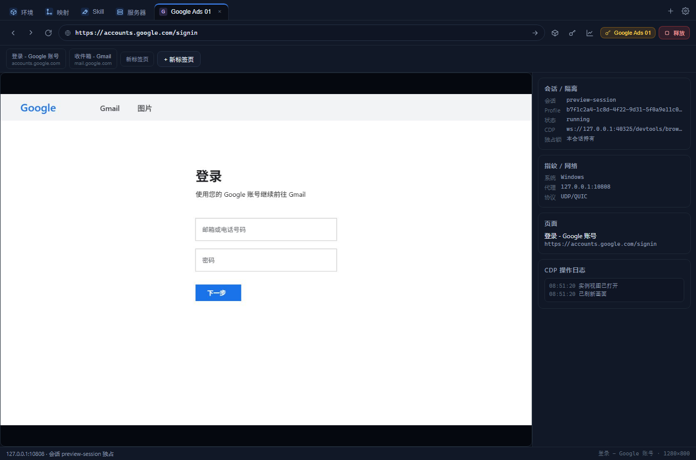
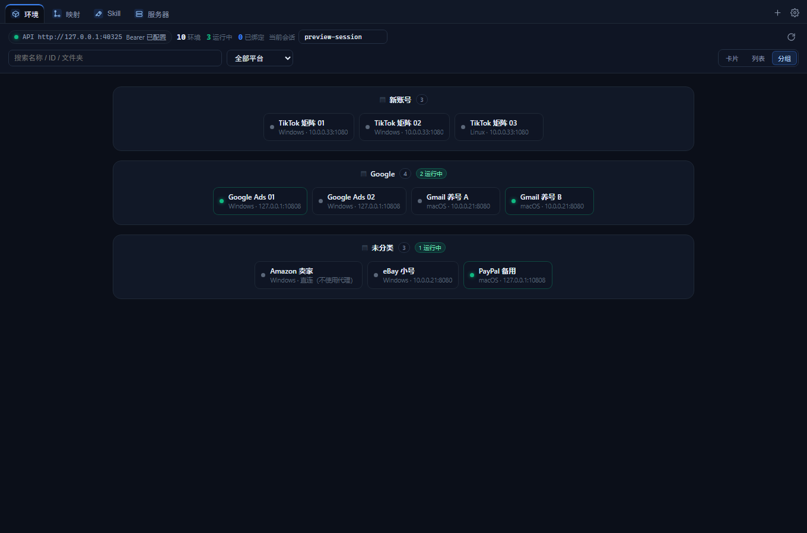
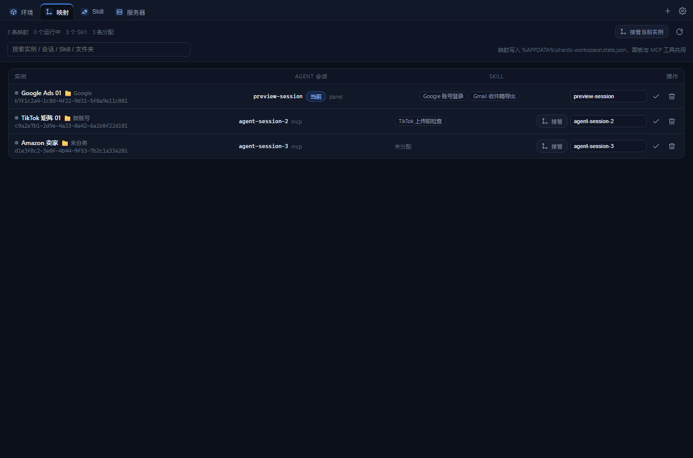
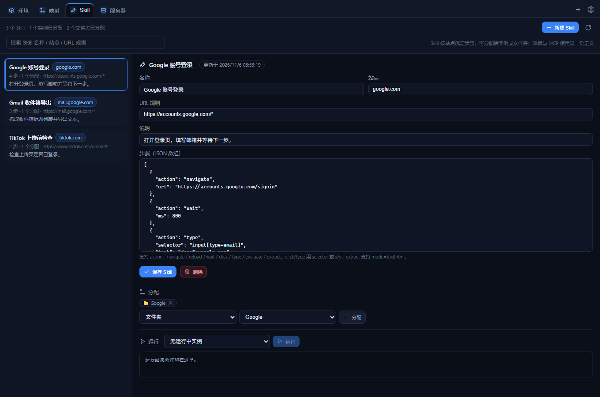
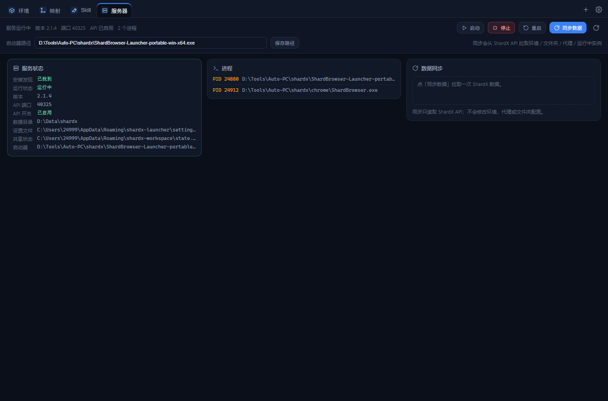

把 ShardX 指纹浏览器变成 OpenChamber 里的浏览器标签式工作台：每个会话独占一个指纹实例， 面板四页控制台、启动器主界面镜像、32 个 MCP 工具、19 条桥接路由，零第三方运行时依赖。
session_id ↔ profileId 强绑定，profile 独占锁。两个会话不会抢同一个指纹实例，一个会话可以并行持有多个实例。
固定控制台标签 + 每个实例一条标签（instance:<profileId>）。关闭标签只移除 UI，不停止实例。
面板与 MCP 共用 state.json。Agent 绑定的实例会直接出现在标签栏，反过来也一样。
截图流 + 鼠标/滚轮/键盘/粘贴/IME 全量转发，Emulation 按容器像素重排，1:1 铺满。
启动器窗口启动的实例补读 DevToolsActivePort；旧实例一键停止并带调试参数重启。
每 20s 重新发现启动器，关闭时自动拉起（30s 冷却）；启动器路径自动解析并落盘。
数据来自当前仓库源码行数与 manifest.json。

环境 · 主界面镜像
环境 · 卡片视图
环境 · 本地列表 + 文件夹标签
实例 · 实时视口面板只渲染，服务管网络，MCP 独立驱动；三者共享状态文件。
flowchart LR
subgraph OC["OpenChamber"]
UI["面板 iframe
panel/main.js"]
HOST["宿主 host.serviceRequest"]
AGENT["Agent / MCP 客户端"]
end
subgraph EXT["shardx-workspace"]
SVC["回环桥接服务
service/main.js"]
IDX["MCP stdio
index.js"]
STATE[("state.json")]
end
subgraph SX["ShardX 2.1.x"]
API["启动器 REST
:40325"]
WEB["WebView2 主界面
CDP :40326"]
INST["指纹实例
CDP 动态端口"]
end
UI --> HOST --> SVC
SVC -->|Bearer 自动签发| API
SVC -->|WebSocket| INST
SVC -->|截图 / Input| WEB
AGENT --> IDX
IDX --> API
IDX --> INST
UI <--> STATE
IDX <--> STATE
标签、四页 UI、镜像渲染、输入映射。不能直接访问 127.0.0.1（guest CSP），全部走 host.serviceRequest。
宿主分配端口与 Bearer；自动发现启动器、签发 HS256 JWT、代理 REST、维持 CDP、读写状态、控制启动器。
独立 stdio 进程，直接驱动 REST + CDP。工具名 shardx-workspace_*，与面板共享映射与 Skill。
sequenceDiagram
participant U as 用户 / Agent
participant P as 面板 / MCP
participant S as 桥接服务
participant L as ShardX REST
participant B as 指纹实例
U->>P: bind(profileId)
P->>S: /shardx/discover
S-->>P: {port, token}
P->>S: /proxy startProfile
S->>L: POST /profiles/{id}/start
L-->>S: web_socket_debugger_url
P->>S: /cdp/open
S->>B: WebSocket 握手
P->>S: Target.getTargets / attachToTarget
S-->>P: 页面 target + sessionId
sequenceDiagram
participant M as LauncherMirror
participant S as 桥接服务
participant W as WebView2
loop 每 900ms
M->>S: Page.captureScreenshot
S-->>M: JPEG base64
end
M->>S: Input.dispatchMouseEvent
M->>S: Emulation.setDeviceMetricsOverride
S->>W: 页面随容器重排
sequenceDiagram
participant P as 面板
participant S as 桥接服务
participant L as 启动器 API
participant F as DevToolsActivePort
P->>S: POST /instances/running
S->>L: GET /running
S->>F: 补读实际端口
S-->>P: enriched / attachable
P->>S: attachRunningProfile
| 方法 | 路由 | 作用 |
|---|---|---|
| GET | /health | 宿主就绪探测 |
| POST | /shardx/discover | 读启动器 settings，返回端口 + 现场签发 Bearer |
| POST | /instances/running | 运行实例列表，补读 DevToolsActivePort |
| GET/POST | /launcher/settings | 读取/合并启动器设置（调试参数注入） |
| GET | /launcher/status | 探测镜像 CDP 端口与页面 target |
| POST | /proxy | 代理 ShardX REST（仅回环，15s / 7MB） |
| POST | /cdp/open | 建立 CDP WebSocket |
| POST | /cdp/send | 写入一帧 CDP 命令 |
| POST | /cdp/events | 长轮询响应与事件（≤5s） |
| POST | /cdp/close | 关闭 CDP 连接 |
| GET/POST | /workspace/state | 读/写共享状态 |
| POST | /workspace/mapping | 写入或删除会话映射 |
| POST | /workspace/skill | 创建/更新 Skill |
| POST | /workspace/skill/remove | 删除 Skill |
| POST | /workspace/assign | 分配/取消分配 Skill |
| POST | /workspace/settings | 更新设置（启动器路径等） |
| GET | /workspace/server/status | 启动器状态、进程、镜像端口 |
| POST | /workspace/server/control | start / stop / restart 并等待 /health |
| POST | /workspace/server/sync | 同步分组、环境、代理、运行实例 |
① 一个 profile 同时只能被一个会话锁定。② 关闭标签不等于停止实例，只有「停止并释放」才 stop + 解锁。③ 同一 profile 复用一条 CDP，不要重复 connect。
④ 面板不直连网络，新能力必须走 service 路由。⑤ 启动器路径不做假设：state → 运行进程 → 常见目录，结果落盘。
⑥ 镜像输入必须做坐标反算，否则会点偏。
暗色极客主题，固定「环境」标签 + 动态实例标签。
默认 ShardX 主界面镜像（截图 + 输入转发）；可切本地列表。本地列表有卡片 / 列表 / 标签组三种视图，列表内自带文件夹标签。

标签组视图地址栏、前进/后退/刷新、实时视口、Target.getTargets 子标签、点击/键盘转发、检查器（会话/指纹/页面）与 CDP 日志。
查看/编辑 session → profile 映射；与 Agent 的 MCP 调用共享同一份状态，刷新即可看到新绑定。

会话映射按网站沉淀操作步骤（navigate / click / type / wait / evaluate / extract），分配给实例或整个文件夹，支持逐步执行与失败中断。

Skill 页面启动/停止/重启启动器、探测端口与版本、同步分组/环境/代理/运行实例；自动注入 WebView2 调试参数。

服务器页面标签：全部环境 + 各文件夹（环境数 / 运行数）。全部环境显示文件夹列且不拖拽；切到具体文件夹后按手动顺序启用行拖拽。表头支持单击/双击排序，9 种字段与升降序写入 localStorage。
| 区域 | 操作 | 结果 |
|---|---|---|
| 标签栏 | 点 + / 选环境「启动实例」 | 启动并绑定，开 instance:<id> 标签 |
| 标签栏 | 关闭实例标签 | 只移除 UI，实例继续运行；自动标签记入 dismissed |
| 环境 · 镜像 | 点「重启并启用镜像」 | 注入 WebView2 调试参数并重启启动器 |
| 环境 · 镜像 | 点「接管 N 个运行实例」 | 停止无端口实例并通过 API 重启，后台开标签 |
| 列表 | 单击 / 双击表头 | 切换排序方向 / 循环排序字段 |
| 列表 | 文件夹标签 | 只切换内容区；选中项持久化 |
| 列表 | 拖拽行（手动排序 + 具体文件夹） | 写入 shardx-profile-order |
| 实例 | 地址栏 / 刷新 / 前进后退 | CDP 导航并等待加载 |
| 实例 | 点视口 / 键盘输入 | 按 aspect-fit 反算后转发 Input.* |
| 映射 | 解除 / 改绑 | 释放或更新共享映射 |
| Skill | 分配 / 执行 | 按文件夹或 profile 生效，逐步返回结果 |
| 服务器 | 启动 / 停止 / 重启 | 等待 /health 就绪后返回版本与端口 |
零依赖 stdio 服务端；工具名在 OpenChamber 中显示为 shardx-workspace_<tool>。
shardx-workspace_list_and_bind_profile { session_id: "demo", action: "auto-bind" }
shardx-workspace_session_navigate { session_id: "demo", url: "https://example.com" }
shardx-workspace_session_snapshot { session_id: "demo" }
shardx-workspace_session_stop_and_release { session_id: "demo" }contributes.tools 只负责聊天展示，不会注册工具。
必须把 index.js 写进 OpenCode 的 mcp.servers，并重启 Agent 会话。
完整参数见 docs/MCP-TOOLS.md。
%APPDATA%\shardx-workspace\state.json，面板 / 服务 / MCP 三方读写；原子替换写入。
{
"version": 1,
"mappings": [
{
"profile_id": "uuid",
"profile_name": "环境名",
"session_id": "openchamber-session",
"source": "panel | mcp",
"updated_at": 1760000000000
}
],
"skills": [
{
"id": "skill-uuid",
"name": "登录流程",
"site": "example.com",
"url_pattern": "https://example.com/*",
"description": "",
"steps": [{ "action": "navigate", "url": "https://example.com/login" }],
"created_at": 0,
"updated_at": 0
}
],
"assignments": [
{ "skill_id": "skill-uuid", "target_type": "profile", "target_id": "uuid", "created_at": 0 }
],
"settings": { "launcher_path": "D:\\Tools\\shardx\\ShardBrowser-Launcher.exe" }
}服务读取 %APPDATA%\shardx-launcher\settings.json 的 api_port / api_secret，
用 secret 现场签 HS256 JWT（sub=shardx-api）作为 Bearer。手动 Token 优先。
面板 iframe 的 CSP 禁止直连 127.0.0.1，清单的 origins 只接受 https。
宿主通过 host.serviceRequest 注入端口与 Bearer，服务再访问 ShardX。
| 键 | 作用 |
|---|---|
shardx-home-mode | mirror / local，环境页默认模式 |
shardx-sort | {key, dir} 排序字段与方向 |
shardx-list-folder | 当前文件夹标签，__all__ 为全部 |
shardx-view | cards / list / groups |
shardx-profile-order | 每个文件夹内的手动拖拽顺序 |
前置：OpenChamber ≥ 2.5、ShardX Launcher 2.1.x、Bun、Node ≥ 22、Windows（镜像）。
bun install bun run typecheck bun run validate bun run build
$dst = "$env:USERPROFILE\.config\openchamber\extensions\shardx-workspace" New-Item -ItemType Directory -Force $dst | Out-Null Copy-Item index.js, manifest.json, icon.svg, package.json -Destination $dst -Force Copy-Item panel, service -Destination $dst -Recurse -Force
{
"mcp": {
"servers": {
"shardx-workspace": {
"type": "local",
"enabled": true,
"command": [
"C:\\Users\\<你>\\.local\\tools\\node\\node.exe",
"C:\\Users\\<你>\\.config\\openchamber\\extensions\\shardx-workspace\\index.js"
]
}
}
}
}写入 ~/.config/opencode/opencode.json 后重启 Agent 会话。
| 变量 | 使用方 | 作用 |
|---|---|---|
OPENCHAMBER_SERVICE_PORT | 宿主 → service | 回环服务监听端口 |
OPENCHAMBER_SERVICE_TOKEN | 宿主 → service | 所有路由的 Bearer 校验 |
SHARDX_WORKSPACE_STATE | service / MCP | 覆盖共享状态文件路径 |
SHARDX_LAUNCHER_SETTINGS | service / MCP | 覆盖启动器 settings.json |
SHARDX_LAUNCHER_PATH | service | 启动器路径提示（最高优先级） |
SHARDX_MIRROR_PORT | service | 镜像 CDP 端口提示 |
WEBVIEW2_ADDITIONAL_BROWSER_ARGUMENTS | 启动器 | 注入远程调试端口与 origins |
| 现象 | 原因 | 处理 |
|---|---|---|
| 面板全部请求 401 | 宿主 token 未注入 / 手动裸跑 service | 重新加载扩展，不要手动启动 service |
| discover 返回 found:false | 启动器未安装或 settings 不存在 | 设置 SHARDX_LAUNCHER_SETTINGS |
| 启动器关闭后不恢复 | 路径解析失败 | 服务器页填一次路径，成功后自动落盘 |
| 镜像空白 | 启动器未带调试端口 | 点「重启并启用镜像」；检查 40326 |
| 镜像点击偏移 | 容器与视口尺寸不一致 | 确认 ResizeObserver 生效后重试 |
| 实例没有 CDP 端口 | 启动器窗口启动，缺 extra_args | 「接管 N 个运行实例」或重启启动器 |
| MCP 工具不出现 | OpenCode 配置未生效 | 重启会话，检查 Node ≥ 22 与路径 |
当前 1.4.0；下一阶段聚焦冲突可视化、Skill 录制与可观测性。
四页控制台、浏览器式实例标签、共享状态、15 个 MCP 工具、启动器自动发现。
32 个工具；真实 E2E：绑定 → 导航 → 快照 → 标签 → 截图 → 释放。
主界面镜像铺满、运行实例接管、连接自愈、列表文件夹标签、自动生成文档、Canvas 图鉴。
跨会话独占方可见并可释放；录制操作生成 Skill；Cookie 编辑器与 HAR 导出。
多启动器 / 远程节点、CDP 延迟与重连仪表盘、Bun test + GitHub Actions。
标签拖拽分组、代理延迟探测、批量启停、面板内更新器、英文界面。
冲突可视化：两个会话抢同一 profile，第二个会话能看到持有方并一键释放。
Skill 录制：录制一次登录流程，保存后在其他 profile 回放成功。
多节点：两个节点各绑定一个实例，标签栏显示节点徽标，互不串线。
不绕过 ShardX 授权或计费；不在面板执行任意系统命令；不把启动器 API 暴露到非回环地址。
| 文档 | 内容 |
|---|---|
| README.md | 功能地图、安装、MCP 注册、架构、关键设计 |
| docs/ARCHITECTURE.md | 模块边界、调用链、状态模型、不变量 |
| docs/MCP-TOOLS.md | 32 个工具的完整参数参考（自动生成） |
| docs/OPERATIONS.md | 构建、部署、升级、排障、回滚 |
| docs/ROADMAP.md | 版本历史与后续迭代 |
| CHANGELOG.md | 逐版本变更记录 |